CS184/284A Fall 2026 Homework 2 Write-Up
Link to webpage: https://cal-cs184-student.github.io/hw2-om-team-writeup/
Link to GitHub repository: https://github.com/cal-cs184-student/hw2-om-team-writeup
Overview
In this homework, we implemented geometric modeling operations for Bézier curves, Bézier surfaces, and triangle meshes. We used de Casteljau's algorithm to evaluate curves through repeated interpolation, then extended the same process to surfaces using two parameters. For triangle meshes, we implemented area-weighted vertex normals, edge flips, edge splits, and Loop subdivision using the half-edge data structure. The assignment helped us understand how both control-point positions and mesh connectivity influence a model's appearance. Vertex normals improved the smoothness of the shading, while subdivision increased mesh resolution and rounded sharp features. The cube experiment showed that symmetric geometry can produce asymmetric subdivision results when its triangulation is unbalanced. We also learned the importance of maintaining consistent half-edge pointers and computing new vertex positions before modifying the mesh.Section I: Bezier Curves and Surfaces
Part 1: Bezier curves with 1D de Casteljau subdivision
The de Casteljau algorithm evaluates Bezier curves by interpolating between neigboring control points using a parameter t. Each step reduces the number of points by one until only one point remains on the curve. In BezierCurve::evaluateStep, I implemented the interpolation formula (1 - t)pi + tpi+1 for each pair of neigboring points. The function returns the new points without changing the original ones. For my custom curve, I created bzc/section1_six_points.bzc with six control points: (0.10, 0.25), (0.22, 0.80), (0.40, 0.15), (0.58, 0.85), (0.78, 0.20) and (0.90, 0.65). I chose points with alternating heights to show how the control points affect the curves shape. Since there are six control points, the curve has degree five. I also tested the function to make sure each step returned the correct number of points and produced the expected results.Here is an example 2x2 gridlike structure using an HTML table. Each tr is a row and each td is a column in that row. You might find this useful for framing and showing your result images in an organized fashion.
|
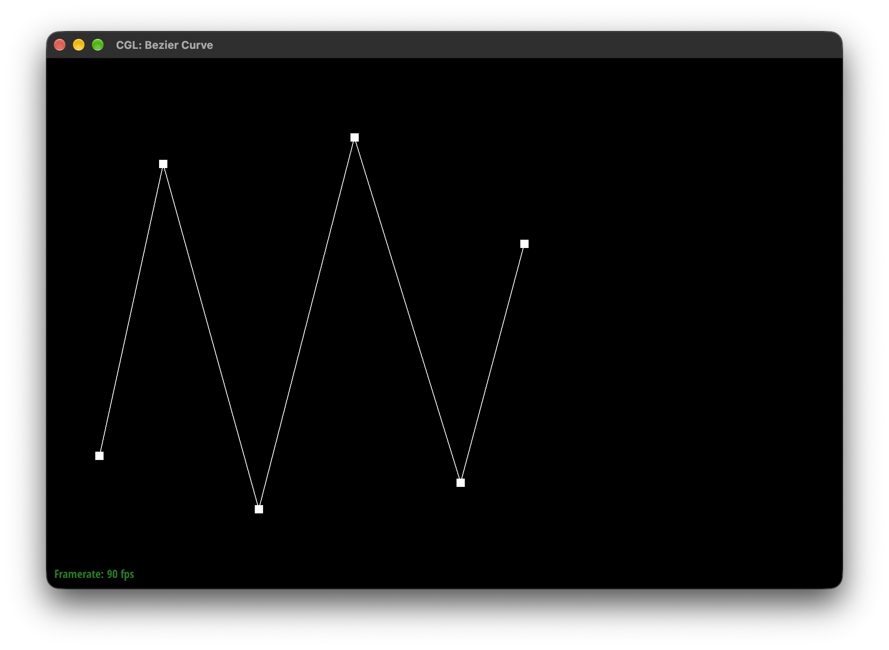 |
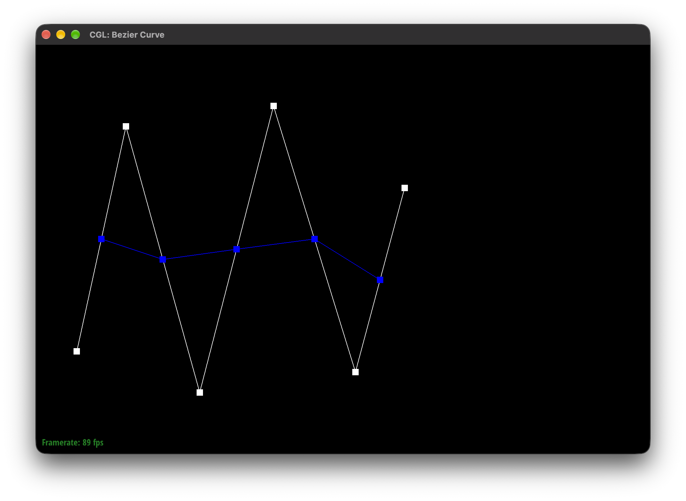 |
|
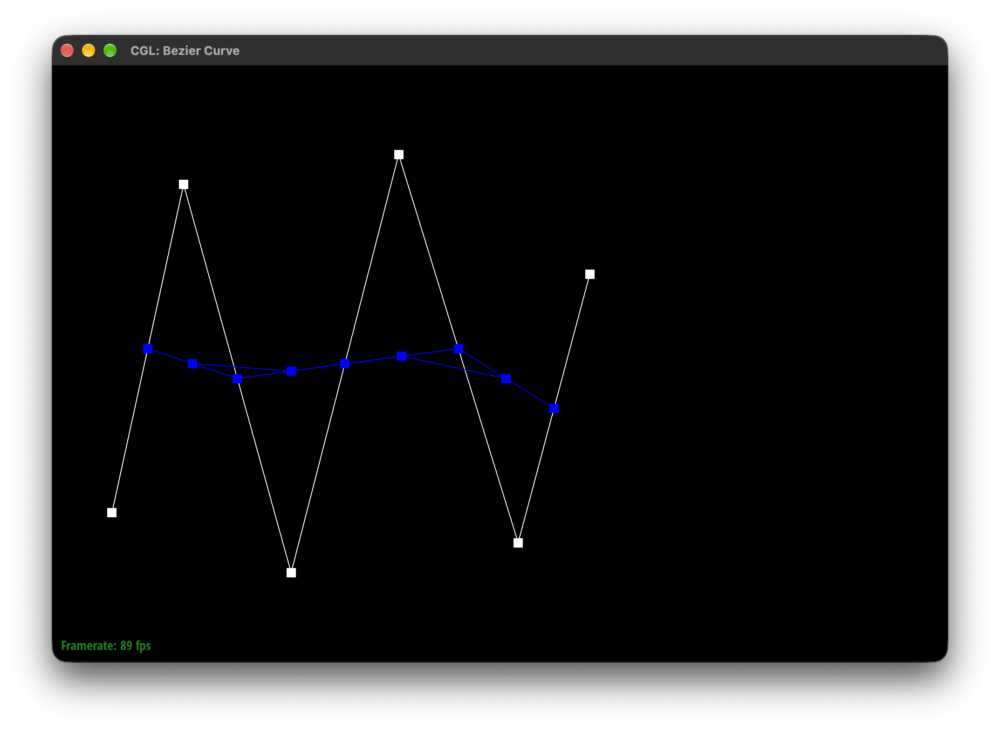 |
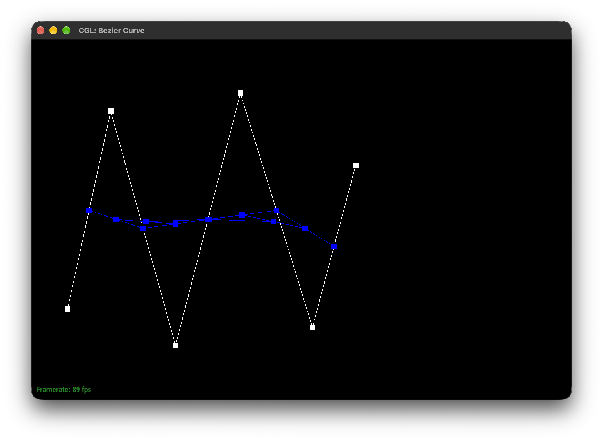 |
|
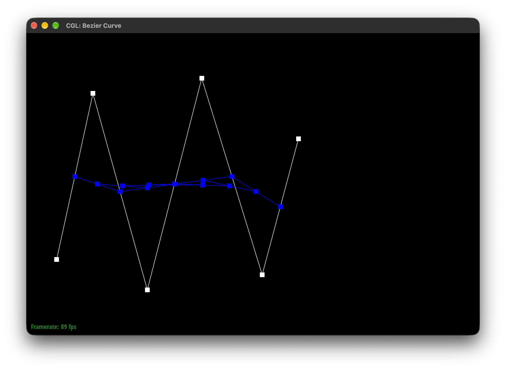 |
|
Part 2: Bezier surfaces with separable 1D de Casteljau
Bezier surfaces work similarly to Bezier curves, but it uses 3D control points and two parameters, u and v. To evaluate a point on the surface, I first applied the de Casteljua algorithm to each row of control points using u. Then I used v to evaluate the resulting points and find the final position on the surface. I implemented three functions. BezierPatch::evaluateStep which interpolates between neigboring 3D points. BezierPatch::evaluate1D which repeats interpolation until one point remains. BezierPatch::evaluate which evaluates each row using u, then uses v to find the final point. I tested the functions using a simple 2x2 control grid. The results matched the expected values, including the point (0.5, 1, 0.25) when u = 0.25 and v= 0.5.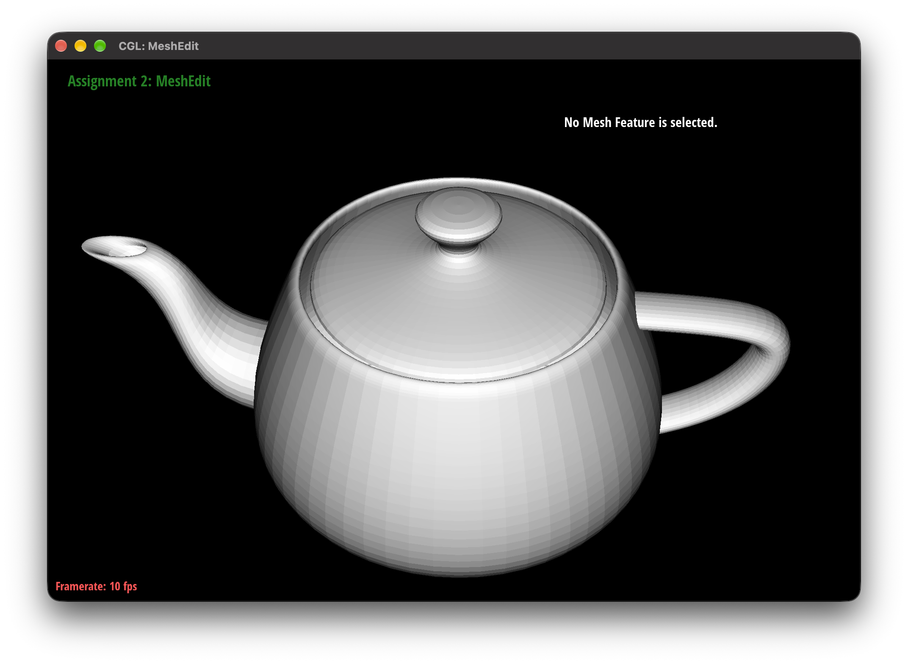
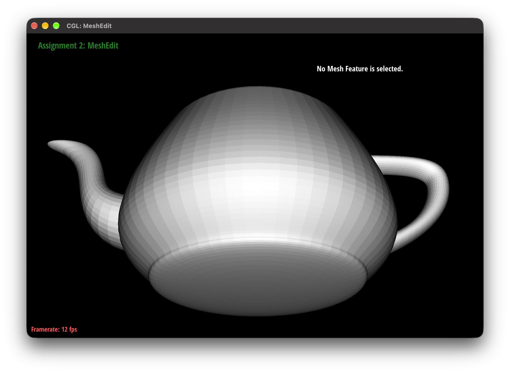
Section II: Triangle Meshes and Half-Edge Data Structure
Part 3: Area-weighted vertex normals
To compute the area-weighted normal at a vertex, I traversed all incident triangles using the half-edge structure. For each non-boundary triangle, I computed the cross product of two of its edge vectors and added the result to an accumulated normal. Because the magnitude of this cross product is twice the triangle's area, larger triangles naturally contribute more weight. Finally, I normalized the accumulated vector to produce a unit vertex normal.


Part 4: Edge flip
I implemented the edge flip as a constant-time local operation on the two
triangles adjacent to an interior edge. I first saved references to all six
local half-edges, four vertices, five edges, and two faces before modifying
any connectivity. I then reassigned each affected half-edge's
next, twin, vertex,
edge, and face pointers so that the shared edge
connected the two previously opposite vertices. Finally, I updated the
representative half-edge pointers for the affected vertices, edges, and
faces. Boundary edges are returned unchanged, and the operation does not
create or delete any mesh elements.
To avoid difficult pointer bugs, I labeled the complete local configuration before writing the assignments and reset every pointer in the two modified triangles, including pointers whose targets did not change. I tested the operation by flipping multiple edges on the teapot and checking that the triangulation changed locally without creating holes or disconnecting the mesh.


Part 5: Edge split
I implemented the edge split as a constant-time operation on the two
triangles adjacent to an interior edge. The operation inserts a new vertex
at the midpoint of the original edge and connects it to the two opposite
vertices, replacing the original two triangles with four. I reused the
original edge and two original faces, then allocated exactly one vertex,
three edges, two faces, and six half-edges. After creating the new elements,
I assigned every affected half-edge's next, twin,
vertex, edge, and face pointers and
updated the representative half-edge pointers for all local mesh elements.
The new vertex points along one half of the original split edge, which will
be important when the operation is used by Loop subdivision. Boundary edges
are left unchanged because boundary splitting is not required for the base
assignment.
The main challenge was keeping the expanded local connectivity consistent. I labeled every element before allocating or rewiring anything, drew the four resulting triangle cycles, and explicitly reset all pointers instead of only changing the ones that appeared different. I tested the result with repeated splits and with combinations of splits and flips. The mesh remained connected and did not develop holes or detached faces.
Edge splits


Combined edge splits and flips

Part 6: Loop subdivision for mesh upsampling
I implemented Loop subdivision in five stages. First, I computed and stored the updated position of every original vertex without changing the mesh. For a vertex of degree \(n\), I used \((1-nu)\mathbf{p}+u\sum_i\mathbf{p}_i\), where \(u=3/16\) when \(n=3\) and \(u=3/(8n)\) otherwise. Next, I computed the position of the new vertex on each original interior edge as \(\frac{3}{8}(\mathbf{A}+\mathbf{B})+ \frac{1}{8}(\mathbf{C}+\mathbf{D})\), using the edge endpoints \(A,B\) and the two opposite vertices \(C,D\).
I saved a list of the original edges before changing the topology, then split each of those edges exactly once. I marked the inserted vertices as new and tracked which edges were created by the subdivision. I flipped each new edge that connected one old vertex and one new vertex, producing the Loop connectivity pattern. Finally, after all topology changes were complete, I copied the previously stored positions into the vertices. Computing all positions before splitting was important because otherwise later calculations could accidentally use already-updated geometry.
Subdivision behavior
Each subdivision step replaces every triangle with four smaller triangles. Sharp corners and edges become progressively rounder, while the mesh approaches a smooth limit surface. The icosahedron below becomes visually spherical after only a few iterations. The increasingly dense and regular triangulation also shows that repeated subdivision remains stable.
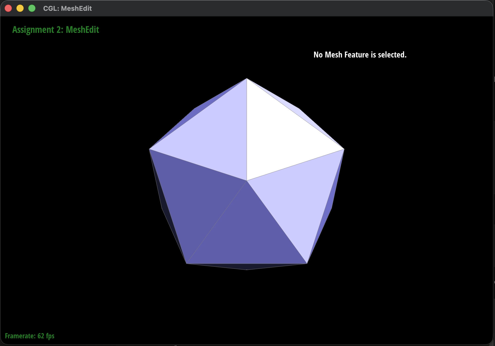
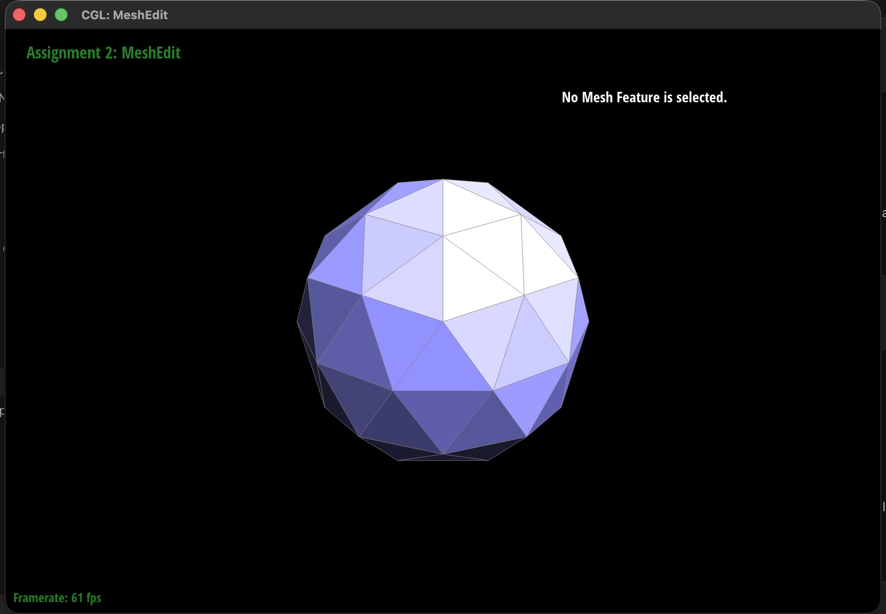
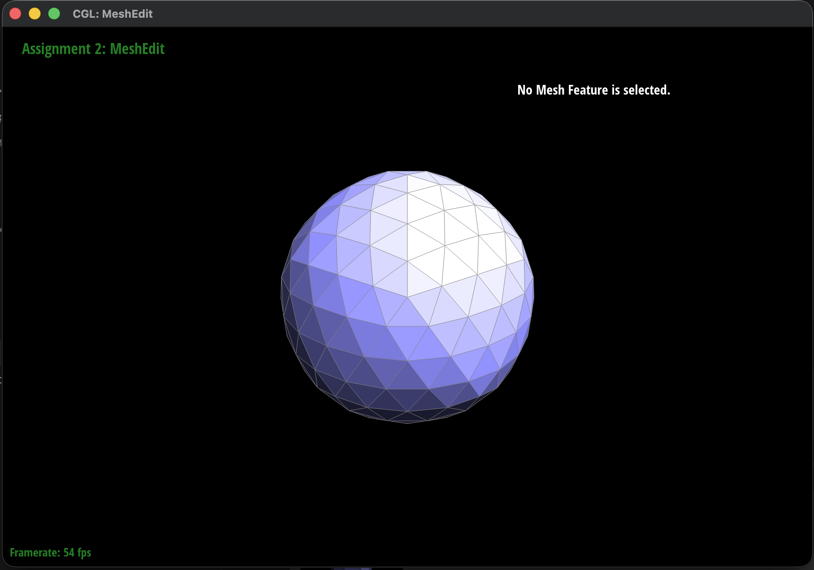
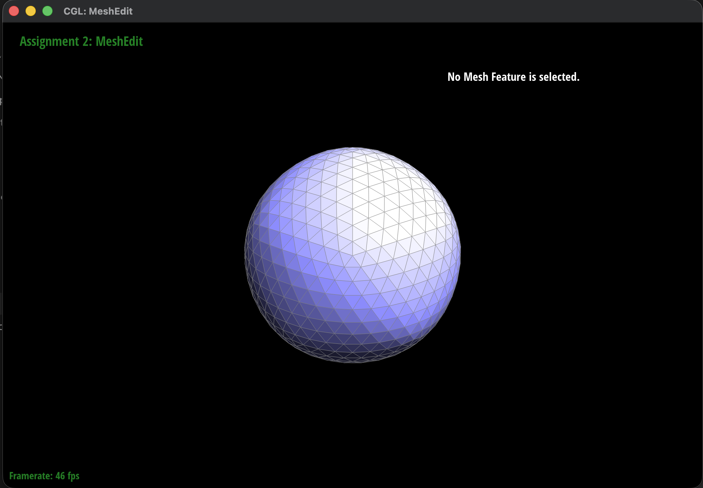
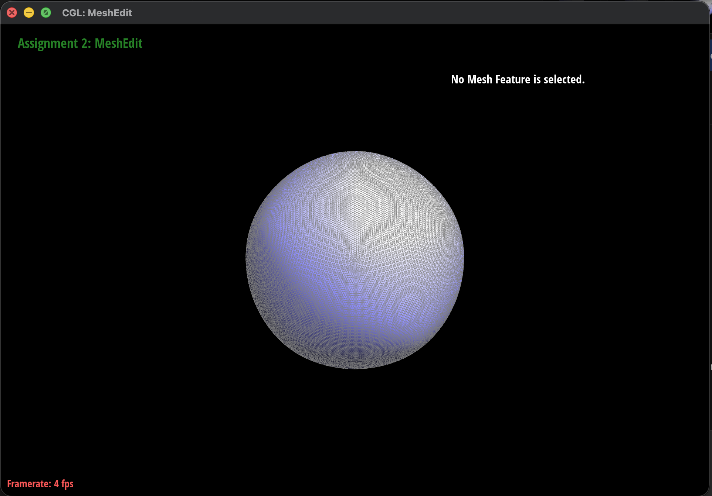
Cube symmetry and preprocessing
Applying Loop subdivision directly to the cube produces an asymmetric result. Although the geometry of the cube is symmetric, each square face is represented by two triangles joined along only one diagonal. Those diagonals give different vertices different local neighborhoods and valences. Since the Loop weights depend on this local connectivity, the diagonal choices become visible as the cube rounds and shrinks.
I reduced this effect by preprocessing the cube with edge splits so that each face had a more balanced triangulation before subdivision. The additional control vertices distribute the connectivity more evenly and constrain the shape. As a result, the preprocessed cube retains a much more symmetric, rounded-cube silhouette after the same number of subdivision steps.
Cube without preprocessing
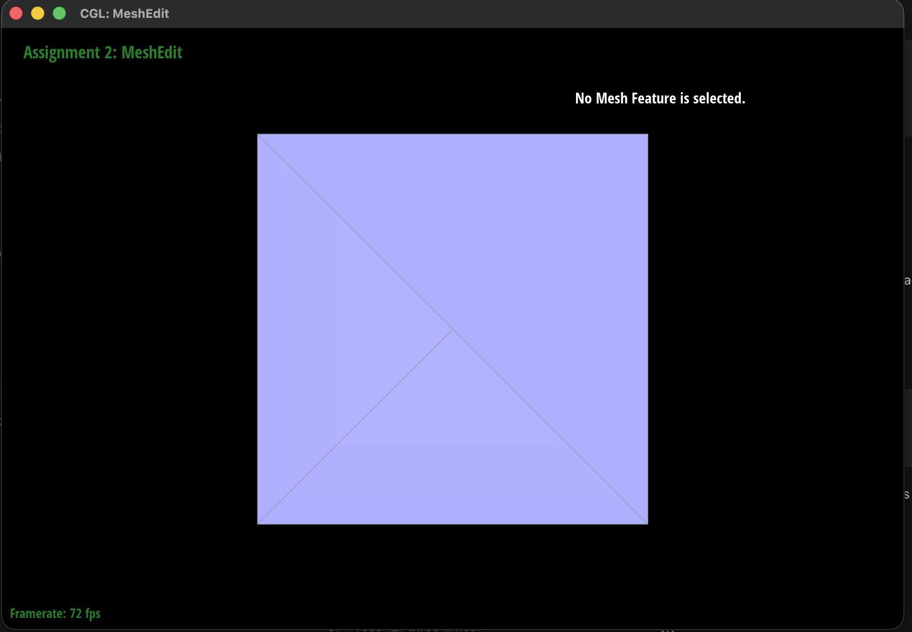
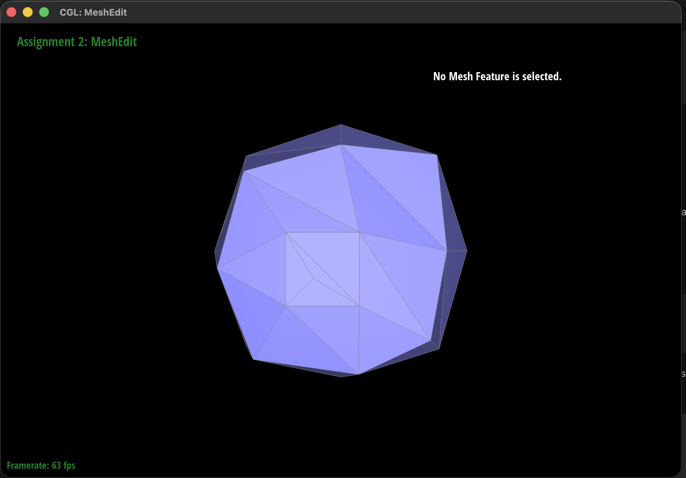
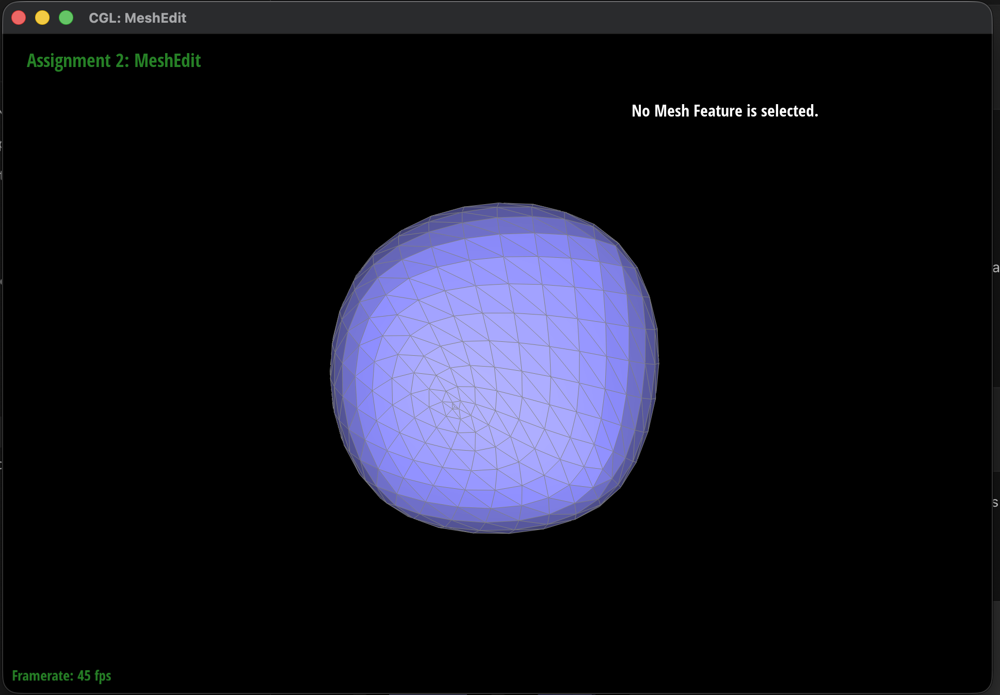
Cube after preprocessing with edge splits
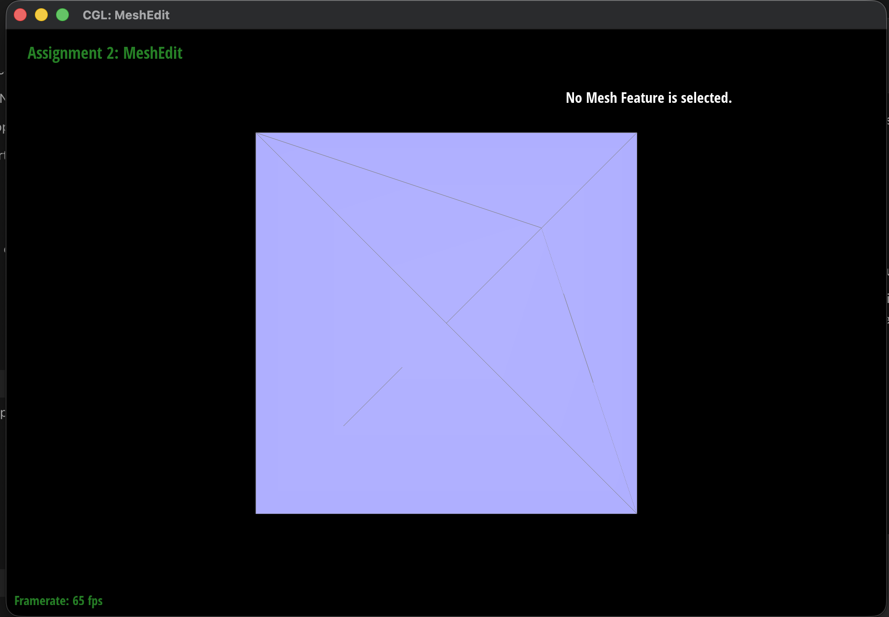
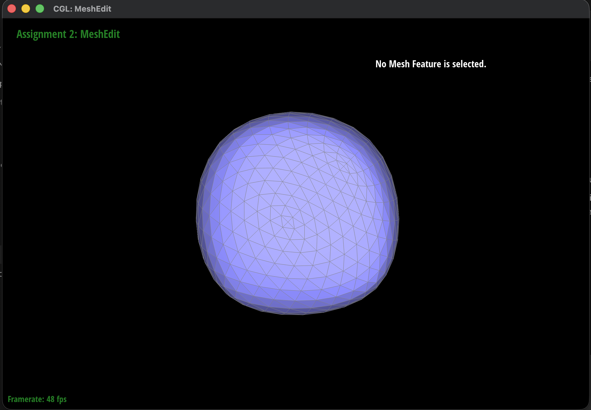
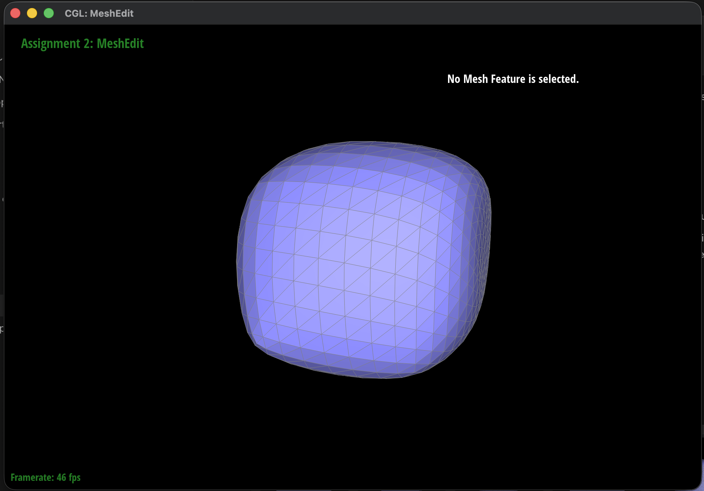